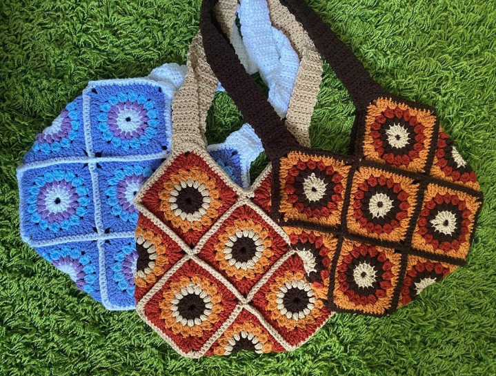
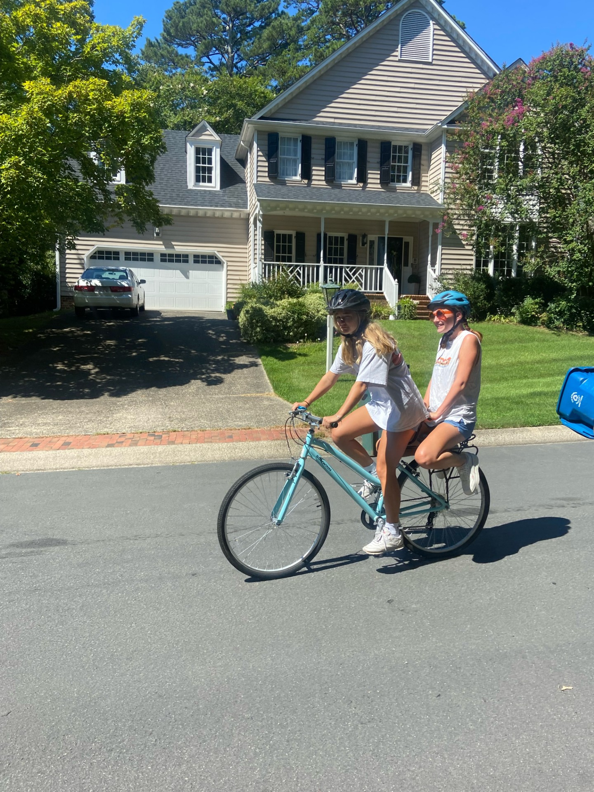
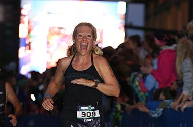

My Hobbies and Interests
#1: Crocheting
I have been crocheting for over 2 years now and it is definitely my favorite hobby. I use it to be "productive" while I relax and watch TV.
#2: Biking
Biking has also been a hobby of mine since I was a kid. I don't have as much free time as I used to, but during quarantine I used to bike about 20 miles each week.
#3: Videogames
Playing videogames was another hobby I picked up during quarantine. A lot of my friends got me into playing CSGO which is still my favorite game to this day. I'd love to develop my own videogame someday, or work with a team to improve one that already exists. This is why so many developers also love playing video games.
#4: Running
My most recent hobby is running, and I have really gotten into it the past few weeks. I want to run the "Tar-Heel Ten Miler" in April before I graduate. My mom has always been very influential and supportive to any goals of mine, and she ran marathons while I was growing up. I want to make her proud by completing the same races she did at my age.

5 Books I Highly Recommend:
- When Breath Becomes Air by Paul Kalanithi
- Just for the Summer by Abby Jimenez
- Normal People by Sally Rooney
- The Seven Husbands of Evelyn Hugo by Taylor Jenkins Reid
- They Both Die at the End by Adam Silvera